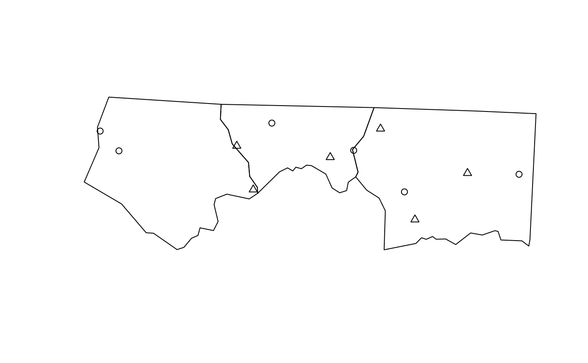
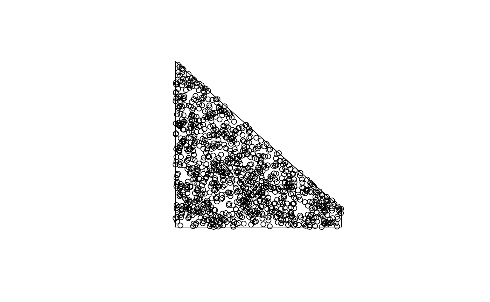

Sample points on or in (sets of) spatial features.
By default, returns a pre-specified number of points that is equal to
size (if type = "random") or an approximation of
size (for other sampling types).
st_sample(x, size, ..., type = "random", exact = TRUE)
Arguments
| x | object of class |
|---|---|
| size | sample size(s) requested; either total size, or a numeric vector with sample sizes for each feature geometry. When sampling polygons, the returned sampling size may differ from the requested size, as the bounding box is sampled, and sampled points intersecting the polygon are returned. |
| ... | ignored, or passed on to sample for |
| type | character; indicates the spatial sampling type; one of |
| exact | logical; should the length of output be exactly
the same as specified by |
Value
an sfc object containing the sampled POINT geometries
Details
The function is vectorised: it samples size points across all geometries in
the object if size is a single number, or the specified number of points
in each feature if size is a vector of integers equal in length to the geometry
of x.
if x has dimension 2 (polygons) and geographical coordinates (long/lat), uniform random sampling on the sphere is applied, see e.g. http://mathworld.wolfram.com/SpherePointPicking.html
For regular or hexagonal sampling of polygons, the resulting size is only an approximation.
As parameter called offset can be passed to control ("fix") regular or hexagonal sampling: for polygons a length 2 numeric vector (by default: a random point from st_bbox(x)); for lines use a number like runif(1).
Examples
#> Reading layer `nc' from data source `/home/travis/build/r-spatial/sf/inst/shape/nc.shp' using driver `ESRI Shapefile' #> Simple feature collection with 100 features and 14 fields #> geometry type: MULTIPOLYGON #> dimension: XY #> bbox: xmin: -84.32385 ymin: 33.88199 xmax: -75.45698 ymax: 36.58965 #> epsg (SRID): 4267 #> proj4string: +proj=longlat +datum=NAD27 +no_defsp1 = st_sample(nc[1:3, ], 6)#>#>p2 = st_sample(nc[1:3, ], 1:3)#>#>#>#>#>#>#>#>#>#>#>#>#>#>#>#>x = st_sfc(st_polygon(list(rbind(c(0,0),c(90,0),c(90,90),c(0,90),c(0,0)))), crs = st_crs(4326)) plot(x, axes = TRUE, graticule = TRUE)if (sf_extSoftVersion()["proj.4"] >= "4.9.0") plot(p <- st_sample(x, 1000), add = TRUE) x2 = st_transform(st_segmentize(x, 1e4), st_crs("+proj=ortho +lat_0=30 +lon_0=45")) g = st_transform(st_graticule(), st_crs("+proj=ortho +lat_0=30 +lon_0=45")) plot(x2, graticule = g)if (sf_extSoftVersion()["proj.4"] >= "4.9.0") { p2 = st_transform(p, st_crs("+proj=ortho +lat_0=30 +lon_0=45")) plot(p2, add = TRUE) } x = st_sfc(st_polygon(list(rbind(c(0,0),c(90,0),c(90,10),c(0,90),c(0,0))))) # NOT long/lat: plot(x)p_exact = st_sample(x, 1000, exact = TRUE) p_not_exact = st_sample(x, 1000, exact = FALSE) length(p_exact); length(p_not_exact)#> [1] 1000#> [1] 974x = st_sfc(st_polygon(list(rbind(c(-180,-90),c(180,-90),c(180,90),c(-180,90),c(-180,-90)))), crs=st_crs(4326)) if (sf_extSoftVersion()["proj.4"] >= "4.9.0") { p = st_sample(x, 1000) st_sample(p, 3) } # hexagonal: sfc = st_sfc(st_polygon(list(rbind(c(0,0), c(1,0), c(1,1), c(0,0))))) plot(sfc)h = st_sample(sfc, 100, type = "hexagonal") h1 = st_sample(sfc, 100, type = "hexagonal") plot(h, add = TRUE)#> [1] 95 105pt = st_multipoint(matrix(1:20,,2)) ls = st_sfc(st_linestring(rbind(c(0,0),c(0,1))), st_linestring(rbind(c(0,0),c(.1,0))), st_linestring(rbind(c(0,1),c(.1,1))), st_linestring(rbind(c(2,2),c(2,2.00001)))) st_sample(ls, 80)#> Geometry set for 4 features (with 1 geometry empty) #> geometry type: MULTIPOINT #> dimension: XY #> bbox: xmin: 0 ymin: 0 xmax: 0.09485929 ymax: 1 #> epsg (SRID): NA #> proj4string: NA#>#>#>#>